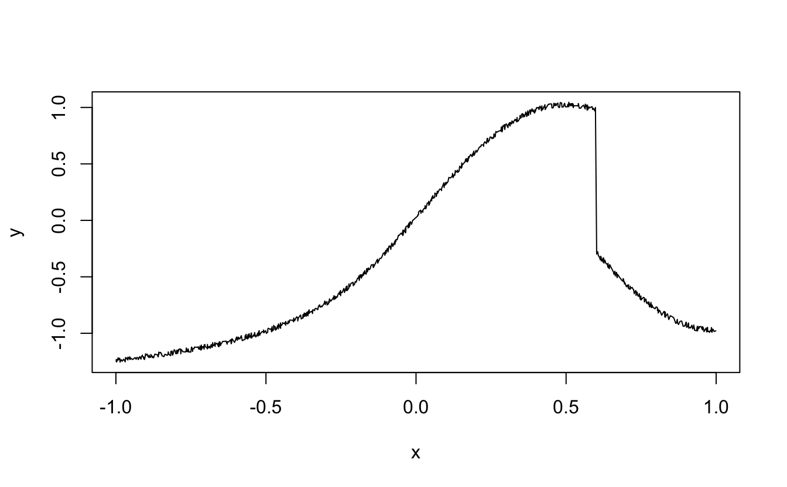
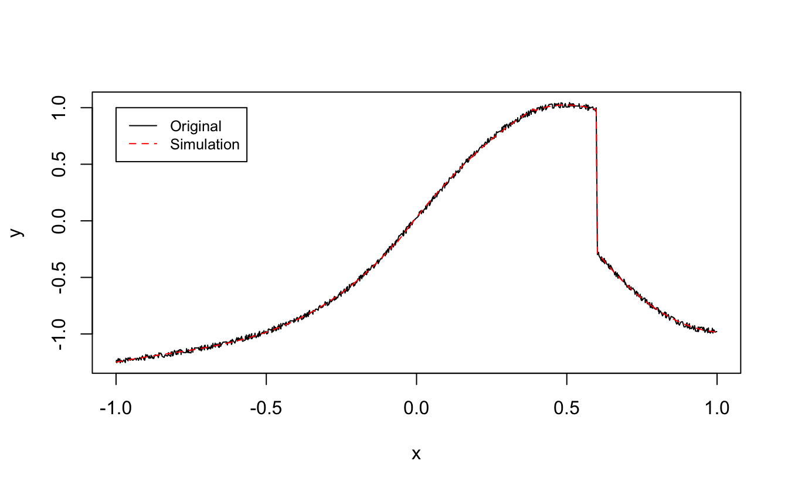
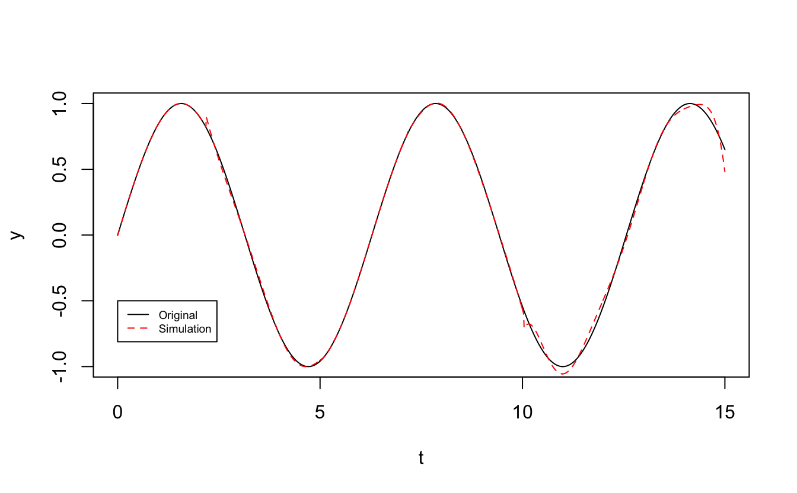

vignettes/ahn.Rmd
ahnr is a package that implements the artificial hydrocarbon networks developed by Hiram Ponce. Most of the work is based on the book Artificial Organic Networks.
The following code let’s you create the data to train an artificial hydrocarbon network.
library(ahnr)##
## Attaching package: 'ahnr'## The following object is masked from 'package:stats':
##
## predict## The following object is masked from 'package:graphics':
##
## plot## The following object is masked from 'package:base':
##
## summary# Create data
set.seed(123)
x <- 2 * runif(1000) - 1;
x <- sort(x)
y <- (x < 0.1) * (0.05 * runif(1000) + atan(pi*x)) +
(x >= 0.1 & x < 0.6) * (0.05 * runif(1000) + sin(pi*x)) +
(x >= 0.6) * (0.05 * runif(1000) + cos(pi*x))
plot(x, y, type = 'l')
# Create the Sigma dataset
Sigma <- list(X = data.frame(x = x), Y = data.frame(y = y))
# Create network
ahn <- fit(Sigma, 4, 0.01, 2000)The trained network can be used to visualize its performance.
# Create test data
X <- data.frame(x = x)
# Simulate
ysim <- predict(ahn, X)
plot(x, y, type = 'l')
lines(x, ysim, type = 'l', lty = 2, col = 'red')
legend(-1, 1, c('Original', 'Simulation'), col = c(1,2), lty = c(1,2), cex = 0.8)
A summary of the network can be obtained with the summary command.
summary(ahn)##
## Artificial Hydrocarbon Network trained:
##
## Number of molecules:
## 4
##
## Learning factor:
## 0.01
##
## Overall error:
## 0.0615
##
## Centers of the molecules:
## x
## molecule1 -0.3900741
## molecule2 0.6661437
## molecule3 0.2555718
## molecule4 0.5338930
##
## Molecules:
## Molecule 1:
## x
## C1 0.035
## H11 3.527
## H12 3.709
## H13 1.466
##
## Molecule 2:
## x
## C2 3.089
## H21 -7.914
## H22 3.842
##
## Molecule 3:
## x
## C3 0.031
## H31 3.295
## H32 -2.165
##
## Molecule 4:
## x
## C4 -0.641
## H41 7.889
## H42 -11.506
## H43 4.771Finally, the network itself can be plotted with the plot command. The text of the carbon of the first molecule is in red.
plot(ahn)# Create data
set.seed(12321)
t <- seq(0, 15, 0.01)
X <- data.frame(x1 = cos(t), x2 = t)
Y <- data.frame(y = sin(t))
# Create the Sigma dataset
Sigma <- list(X = X, Y = Y)
# Create network
ahn <- fit(Sigma, 5, 0.01, 2000)
# Simulate
ysim <- predict(ahn, X)
plot(t, Y$y, type = 'l', col = 'black', xlab = 't', ylab = 'y')
lines(t, ysim, type = 'l', lty = 2, col = 'red')
legend(0, -0.5, c('Original', 'Simulation'), col = c(1,2), lty = c(1,2), cex = 0.6)
summary(ahn)##
## Artificial Hydrocarbon Network trained:
##
## Number of molecules:
## 5
##
## Learning factor:
## 0.01
##
## Overall error:
## 0.0681
##
## Centers of the molecules:
## x1 x2
## molecule1 0.6711820 6.3923153
## molecule2 1.1138319 1.1193610
## molecule3 0.3259886 6.4597589
## molecule4 -0.2025691 4.1373693
## molecule5 -0.1651733 13.7288473
##
## Molecules:
## Molecule 1:
## x1 x2
## C1 -1.768 -1.768
## H11 -2.238 -5.561
## H12 -0.332 2.051
## H13 0.310 -0.162
##
## Molecule 2:
## x1 x2
## C2 0.051 0.051
## H21 0.102 1.047
## H22 -0.207 -0.302
##
## Molecule 3:
## x1 x2
## C3 -3.023 -3.023
## H31 -0.454 2.222
## H32 -0.362 -0.169
##
## Molecule 4:
## x1 x2
## C4 0.780 0.780
## H41 1.681 0.539
## H42 0.699 -0.230
##
## Molecule 5:
## x1 x2
## C5 -2.828 -2.828
## H51 -4.667 -18.164
## H52 1.908 2.992
## H53 -0.864 -0.118plot(ahn)